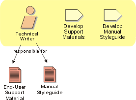

Role:
Technical Writer
The technical writer produces end-user support material such as user guides,
help texts, release notes, and so on.

Staffing
A technical writer should have experience and/or training in
technical writing. He/she may require experience or training in developing
help systems and/or Web sites.
Some background knowledge in the domain being documented is
desirable.
Good communication skills are important, since the technical
writer must often interview developers, testers, and users in order to generate
correct and useful documentation.
Copyright
© 1987 - 2001 Rational Software Corporation
|  Roles and Activities >
Roles and Activities >
 Technical Writer
Technical Writer